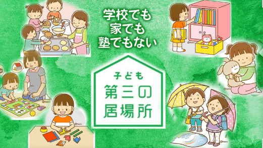

「子ども第三の居場所」とは
学校や家庭以外の場所で、安心できる環境を提供する活動のことです。
子どもたちが友達と交流したり、遊んだり、自己表現や成長の機会を持ったりする場所であり、信頼できる大人たちの支援や指導を受けながら、自己肯定感や自己成長を促す大切な場所です。
宇陀ほっとスペースつどい の想い
近年、家族の在り方や地域とのつながりの変化により、各家庭の子育ての負担が大きくなってきています。
「つどい」では、子どもたち一人ひとりの生き抜く力を育み、また、家族を地域で支えるための場所として、宇陀市の子どもとその家庭をサポートします。
事業内容
子どもたちの生き抜く力を育むため、5つの機会を提供しています
安心
子どもたちが安心・安全に過ごせるよう、居心地のよい環境づくりに努めています。まずはありのままを受け入れることから始めます。
生活習慣
食事、着替え、入浴、歯磨き、挨拶等の基礎的な生活習慣の形成を支援します。友達や大人との関わりを通して自然に習慣化できるよう支援します。
食事
栄養バランスを考慮した温かい食事を提供しています。準備や片付け等も一緒に行うことで、食の大切さやみんなで食事することの楽しさを伝えます。
学習
学習習慣が定着するよう、宿題の時間を設けています。夏休みの自由研究なども一緒に考え取り込みます。情緒面の安定を図りながら支援をしています。
体験
教科書では得られない体験を提供します。川遊びや自然観察、釣りなど、ボランティアの皆様の協力のもと野外活動を行い、社会性や豊かな人間性を育みます。
ご利用案内
対象となるお子様や、ご利用までの流れについて
対象児童
宇陀市に在住する小学生・中学生のうち、以下に該当する児童・生徒が対象です。
定員に空きがある場合は年度の途中でもご利用可能です。
- ① 保護者が、日中に居宅外で就労している場合で孤食が心配な場合（ひとり親家庭等）
- ② 保護者が、疾病又は負傷のため自宅で療養している、又は長期にわたり入院・通院している場合
- ③ 保護者が、傷病又は心身の障害のため、児童を保育することが困難な場合
- ④ 保護者が、長期にわたり介護を必要とする同居の親族の介護をしている場合
- ⑤ 保護者が、修学や就業訓練のため日中に家庭にいない場合
- ⑥ 学校や地域の中で何らかの生活支援が必要と認められた場合
- ⑦ ①〜⑥以外で市が利用を必要と認めた場合
🕒 利用できる時間
火曜日～金曜日: 学校終了後 ～ 午後8時
土曜日 午前9時 ～ 午後6時
長期休業中（土曜日除く） 午前9時 ～ 午後8時
※年末年始及び園の状況により休業
※送迎あり
💰 ご利用料金
月額基本料金: 無料 / 月
※夕食代1食200円、課外活動費月500円以内を別途集金
ご利用までの流れ
お電話か面談でのご連絡
ご利用を希望される方は、まずはお気軽にご相談下さい。
施設の見学と面談
保護者の方のご希望を伺いながら、居場所の紹介を致します。
申し込み書類のご提出
必要書類の提出、申込書の記載などをお願いいたします。
ご利用可否のご連絡
利用条件のあった方に、改めて可否のご連絡をいたします。
アクセス
運営団体及び施設の所在地